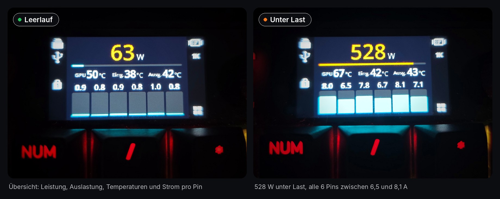
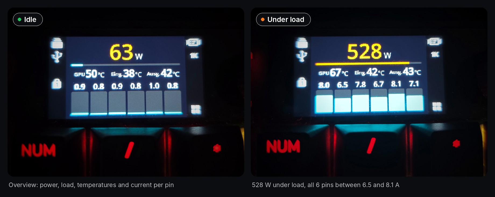
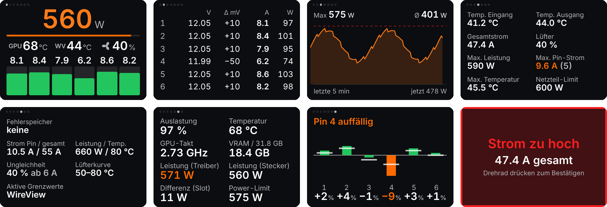
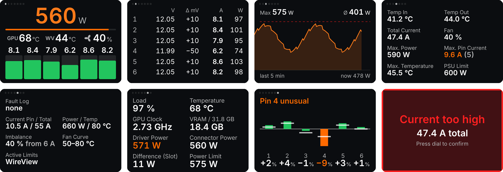

Das Thermal Grizzly WireView Pro II live auf dem Display der CORSAIR VANGUARD 96. The Thermal Grizzly WireView Pro II, live on the display of the CORSAIR VANGUARD 96.
Kostenlos · Windows 10/11 · iCUE 5 ab 5.47 · Inoffiziell, keine Verbindung zu Thermal Grizzly oder CORSAIR Free · Windows 10/11 · iCUE 5 from 5.47 · Unofficial, not affiliated with Thermal Grizzly or CORSAIR


Das ist das echte Widget, nur mit simulierten Messwerten statt eines echten WireView. Ein Klick aufs Display wirkt wie ein Druck aufs Drehrad. This is the real widget, just with simulated readings instead of a WireView. Clicking the display works like pressing the dial.
Bei „Ungleichheit“ trägt Pin 5 viel mehr als Pin 4. Nach zwei Sekunden erscheint die Warnung, ein Druck bestätigt sie. Auf dem Gerät drehst du am Rad, um zwischen den Widgets zu wechseln. With “Imbalance”, pin 5 carries much more than pin 4. After two seconds the warning appears, a press confirms it. On the device you turn the dial to switch between widgets.
Welche Seiten das Widget zeigt, stellst du in iCUE ein. Du kannst es auch mehrfach hinzufügen und dann durch Drehen am Rad zwischen ihnen wechseln. You choose in iCUE which pages the widget shows. You can also add it several times and switch by turning the dial.
Gesamtleistung, Auslastung des Netzteil-Limits, drei frei wählbare Werte und der Strom jedes Pins.Total power, PSU limit usage, three values of your choice and the current of each pin.
Spannung, Abweichung vom Durchschnitt, Strom und Leistung aller sechs Pins.Voltage, deviation from the average, current and power of all six pins.
Leistungskurve über 1, 5, 10 oder 30 Minuten mit Maximum und Durchschnitt.Power curve of the last 1, 5, 10 or 30 minutes with maximum and average.
Temperaturen, Gesamtstrom, Lüfter und Spitzenwerte.Temperatures, total current, fan and peak values.
Fehlerspeicher, Grenzwerte und Lüfterkurve des WireView.Fault log, limits and fan curve of the WireView.
NVIDIA-Karte: Auslastung, Temperatur, Takt, VRAM und Leistung laut Treiber im Vergleich zum Stecker.NVIDIA card: load, temperature, clock, VRAM and driver power compared to the connector.
Zustand des Steckers über Wochen: jeder Pin im Vergleich zu einem Referenztag, damit schleichende Probleme auffallen.Connector health over weeks: each pin compared to a reference day, so creeping problems stand out.
Popup bei Fehlern des WireView, bei Ungleichheit, Spannungsabfall oder einem auffälligen Pin. Optional auch als Windows-Benachrichtigung.Popup for WireView faults, imbalance, voltage drop or an unusual pin. Optionally as a Windows notification too.
Ausführlicher Bericht mit Diagrammen im Browser, per Rechtsklick auf das Symbol der Bridge.Detailed report with charts in the browser, via right-click on the bridge icon.


iCUE-Widgets dürfen keine USB-Geräte ansprechen. Deshalb liest die kleine PinWatch Bridge das WireView aus und gibt die Werte nur auf deinem eigenen PC weiter. iCUE widgets cannot talk to USB devices. So the small PinWatch Bridge reads the WireView and passes the values on, only on your own PC.
Die neueste Version findest du unter Releases. Vorher die WireView-App von Thermal Grizzly schließen.The latest version under Releases. Close the Thermal Grizzly WireView app first.
Install.cmd startenRun Install.cmdInstalliert die Bridge, trägt sie in den Autostart ein und startet sie.Installs the bridge, adds it to autostart and starts it.
Der Installer bietet das am Ende an. Zugriff auf localhost:8787 erlauben und das Widget zum Bildschirm hinzufügen.The installer offers this at the end. Allow access to localhost:8787 and add the widget to the screen.
In iCUE unter Rotary Dial „Bildschirm-Widget“ wählen. Mit Fn + F12 wechselt das Rad zwischen Lautstärke und Widget.In iCUE under Rotary Dial choose “Screen widget”. Fn + F12 switches the dial between volume and widget.